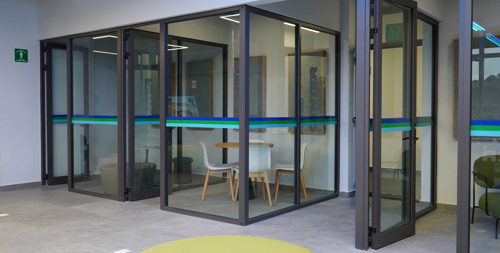

Regulación, contratos, tecnología y AI Governance. Más de 12 años construyendo soluciones legales para empresas en México, Estados Unidos y Latinoamérica.
Instituciones y empresas con las que ha colaborado
Sobre mí
Estrategia legal para la era digital
Resumen profesional
Abogada con más de 12 años de experiencia en gobernanza corporativa, inteligencia estratégica y gestión integral de riesgos. Especializada en la resolución de problemas operativos, cumplimiento normativo y fortalecimiento institucional en sectores público y privado, con aplicación de Inteligencia Artificial a procesos legales, contractuales y regulatorios.
12+
Años de experiencia
20+
Proyectos legales
5
Sectores industriales
3
Países LATAM
2
Sistemas jurídicos
Áreas de Práctica
Seis especialidades, un objetivo: que el derecho juegue a su favor.
Servicios
Servicios especializados
Gobernanza CorporativaEstructuración de órganos de gobierno, políticas internas y mejores prácticas para empresas en crecimiento.
AI GovernanceAsesoría en implementación ética y legal de Inteligencia Artificial en procesos empresariales.
Compliance RegulatorioDiseño e implementación de programas de cumplimiento normativo nacional e internacional.
Contratos y TransaccionesNegociación, redacción y gestión de contratos complejos para sectores público y privado.
Protección de DatosCumplimiento con LFPDPPP, GDPR y marcos regulatorios de privacidad en Latinoamérica.
Propiedad IntelectualProtección de activos intangibles, patentes, marcas y secretos industriales para la innovación.
Cómo trabajo
Cuatro pasos, sin sorpresas.
Cada asesoría sigue la misma lógica: primero entender, después decidir, ejecutar y dar seguimiento.
01
Diagnóstico
Revisamos su modelo de negocio, el marco regulatorio que le aplica y los riesgos reales, no los teóricos.
02
Estrategia
Priorizamos lo urgente y trazamos una ruta legal alineada con sus objetivos de negocio y de inversión.
03
Implementación
Redactamos políticas, contratos y estructuras de gobierno, y los llevamos a la práctica junto con sus equipos.
04
Acompañamiento
Seguimiento continuo para que el cumplimiento evolucione al mismo ritmo que la empresa.
Experiencia
Trayectoria profesional
Del sector público a la tecnología legal.
Business Legal Intelligence Consulting (BLIC)
Corporate Governance, Tech & Digital Compliance and IP Manager
Firma tech especializada en gobernanza corporativa, compliance y propiedad intelectual para nuevos modelos de negocio (startups tech y de IA), con experiencia en los sistemas jurídicos de Estados Unidos y Latinoamérica (Colombia, Perú y Guatemala).
Atarraya, Inc
Legal Manager · Sector privado (Biotecnología)
Responsable in-house de transacciones corporativas, laborales, propiedad intelectual y cumplimiento regulatorio en México y Estados Unidos. Estrategias legales alineadas con finanzas, operación y expansión, en apoyo a levantamiento de capital, alianzas estratégicas y crecimiento internacional.
INAI — Instituto Nacional de Transparencia
Asesora externa · Protección de datos y privacidad
Asesora externa del órgano garante federal en auditoría de cuentas, gestión contractual, control normativo y protección de datos personales, con supervisión del cumplimiento legal, regulatorio y de propiedad intelectual.
Petróleos Mexicanos (Pemex)
Coordinadora Jurídica · Sector energía
Negociación, gestión de riesgos y administración de contratos para transformación industrial, logística y refinerías, incluyendo servicios integrales, obra pública, mantenimiento y servicios especializados.
Comisión Nacional de los Derechos Humanos (CNDH)
Subdirectora de Consultoría en Asuntos Jurídicos
Elaboración y aprobación de reglamentos internos y normas públicas, incluida la innovación digital de KPI, y supervisión de su implementación y cumplimiento.

Patio de la Universidad Panamericana
Formación
Formación académica
Universidad Panamericana · Campus Ciudad de México
Doctorado en DerechoEn cursoDefensa de protocolo en Technology & AI Governance
Maestría en Derecho Administrativo
Especialización en Instituciones de Derecho Administrativo
Licenciatura en Derecho
Filosofía de trabajo
“Apasionada por construir y colaborar con equipos legales e internos para mejorar procesos, siempre bajo un entorno amable, dinámico y de respeto mutuo.”
“Gabriela entendió desde el primer día los riesgos regulatorios de nuestro modelo de negocio. Su asesoría en compliance nos permitió cerrar una ronda de inversión sin contratiempos legales.”
RM
Roberto MartínezCEO, startup tecnológica
“Trabajar con Gabriela en AI Governance fue clave para estructurar nuestras políticas internas antes de escalar el producto a otros países de la región.”
JC
Julia CastañedaDirectora de Operaciones
“Su capacidad para explicar temas legales complejos con claridad hizo toda la diferencia en la negociación de nuestros contratos internacionales.”
AT
Andrés TorresFundador, consultora regional
Preguntas
Preguntas frecuentes
¿Con qué tipo de organizaciones trabaja?
Startups de tecnología e inteligencia artificial, empresas en crecimiento y organismos del sector público, en México, Estados Unidos y Latinoamérica.
¿Puede asesorar operaciones fuera de México?
Sí. Tengo experiencia con los sistemas jurídicos de Estados Unidos, Colombia, Perú y Guatemala, y trabajo en español e inglés.
¿Qué es AI Governance y por qué le importa a mi empresa?
Es el conjunto de políticas, responsables y controles para usar inteligencia artificial de forma legal y ética. Clientes e inversionistas ya lo revisan durante la debida diligencia.
¿Cuándo debe una startup formalizar su gobierno corporativo?
Idealmente antes de su primera ronda de inversión: actas al día, acuerdos claros entre socios y órganos de decisión definidos evitan retrasos en la debida diligencia.
¿Cómo es la primera consulta?
Una conversación para entender su situación y definir alcance, tiempos y honorarios. Puede solicitarla por correo o por WhatsApp.
Contacto
Hablemos de su proyecto
¿Necesita asesoría legal para su empresa tech o requiere apoyo en cumplimiento normativo? Estoy aquí para ayudarle.